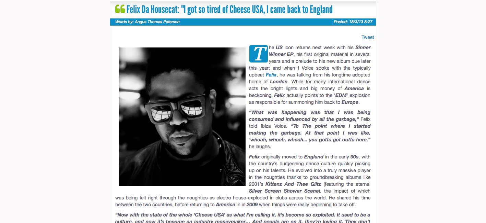

Felix Da Housecat: "I Got So Tired of Cheese USA, I Came Back to England"
{kind=link}

The US icon returns next week with his Sinner Winner EP, his first original material in several years and a prelude to his new album due later this year; and when I Voice spoke with the typically upbeat Felix, he was talking from his longtime adopted home of London. While for many international dance acts the bright lights and big money of America is beckoning, Felix actually points to the ‘EDM’ explosion as responsible for summoning him back to Europe.
“What was happening was that I was being consumed and influenced by all the garbage,” Felix told Ibiza Voice. “To The point where I started making the garbage. At that point I was like, ‘whoah, whoah, whoah... you gotta get outta here,”he laughs.
Felix originally moved to England in the early 90s, with the country’s burgeoning dance culture quickly picking up on his talents. He evolved into a truly massive player in the noughties thanks to groundbreaking albums like 2001’s Kittenz And Thee Glitz (featuring the eternal Silver Screen Shower Scene), the impact of which was being felt right through the noughties as electro house exploded in clubs across the world. He shared his time between the two countries, before returning to America in in 2009 when things were really beginning to take off.
“Now with the state of the whole ‘Cheese USA’ as what I’m calling it, it’s become so exploited. It used to be a culture, and now it’s become an industry moneymaker… And people are on it, they’re loving it. They don’t know the difference of who’s who; they just show up,” he laughs.
“I’m got so tired of Cheese USA late last year, I came back to England. So now I’m based here; I still have my place in the States, and I’ll be going back and forth. I did tell my manager in London though that I don’t intend on DJing in the States extensively. I’m gonna play the Miami Winter Music Conference, but otherwise I’ll be focusing on Europe.”
Felix is careful to emphasise he’s not a ‘hater’; and he definitely carries a jovial tone, as opposed to the somewhat bitter sentiments expressed by some of the other old hands over the infiltration of commercialism.
And there’s no love lost with his home country. “For me, I love the culture so much, Chicago is where I got my first break, I was there in ’84 when house started… ever since I got back to the UK though, I feel like I’m coming back into my own.”
Sinner Winner is a funky crowdpleaser that hosts the evangelical jeers of a preacher who gets caught up in the seductive charms of clubland, and Felix confirms the USA actually has its stamp all over the new material. It was recorded in in his studio in Atlanta, though it was only after repeated airings in US clubs that he was finally convinced to put it out.
“At the time people said to me, you need to put that out, but I was sure they wouldn’t get it because there’s just too much cheese out there… They said, you’re crazy, you got to put that shit out, because that’s your sound, it’s fresh and original. While everybody else is making the same shit, you need to revisit that.” Felix heeded their advice, roadtesting it abroad before eventually bringing it home again. “I played it in LA, and the crowd lost it, and I said you know what, I’m finally ready to put this record out.”
Felix is careful to emphasise he’s not a ‘hater’; and he definitely carries a jovial tone, as opposed to the somewhat bitter sentiments expressed by some of the other old hands over the infiltration of commercialism.
And there’s no love lost with his home country. “For me, I love the culture so much, Chicago is where I got my first break, I was there in ’84 when house started… ever since I got back to the UK though, I feel like I’m coming back into my own.”
Sinner Winner is a funky crowdpleaser that hosts the evangelical jeers of a preacher who gets caught up in the seductive charms of clubland, and Felix confirms the USA actually has its stamp all over the new material. It was recorded in in his studio in Atlanta, though it was only after repeated airings in US clubs that he was finally convinced to put it out.
“At the time people said to me, you need to put that out, but I was sure they wouldn’t get it because there’s just too much cheese out there… They said, you’re crazy, you got to put that shit out, because that’s your sound, it’s fresh and original. While everybody else is making the same shit, you need to revisit that.” Felix heeded their advice, roadtesting it abroad before eventually bringing it home again. “I played it in LA, and the crowd lost it, and I said you know what, I’m finally ready to put this record out.”
“I got into music because I like making music. When the money arrived, I was like wow, this is crazy, I’m getting paid for doing what I like doing. In the studio though, I wanted to make something people will be playing 10 years from now. And all these songs, I cannot even imagine them being played 10 years from now. If anything, people are gonna look back and be like, I can’t even believe that I was dancing to that shit,” he says, the queue for more laughter.
“So that’s how I look at it, I’m just going to chill in England and go back to doing my thing. I have some great supporters in America, but I’d rather just do my thing over here and play where it’s not forced. Put me in a small club, and I’m not gonna charge you a million dollars”, he says with a smile in his voice.
“I’d rather play for a crowd of 200 people who are just sweating and crying tears of happiness, than a room of 2,000 who just don’t get it, and the room is not moving and they’re too busy enjoying their shiny suits and how many bottles they are going to impress girls in short skirts. I can’t do it [laughs], I’ve always been real with that and I just can’t do it.”